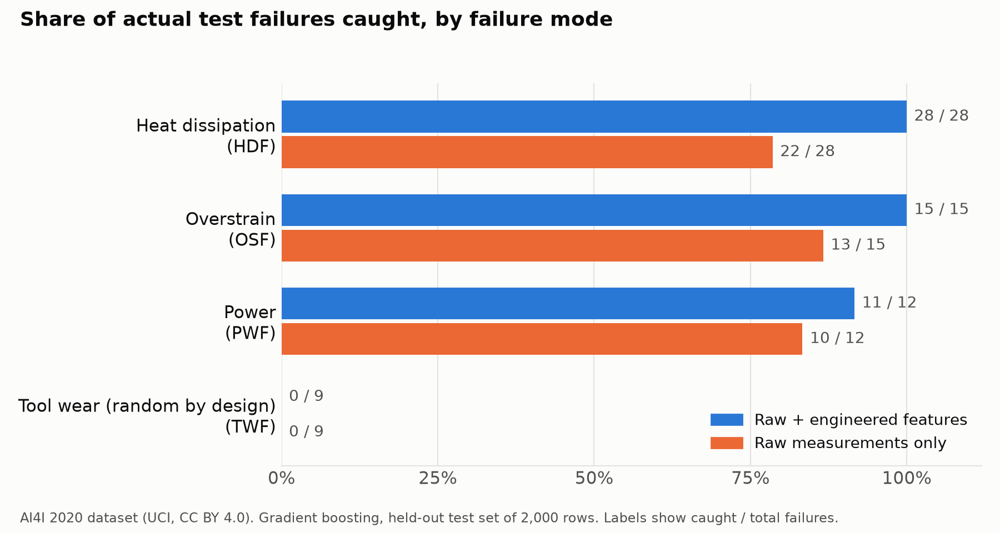

Milling Machine Failure Prediction
Enter the process conditions and get a failure probability, checked against the documented physical failure conditions.
A machine learning model that also uses three values a maintenance engineer checks first: temperature difference, mechanical power and tool load. Everything runs in your browser.
RESULT
Model estimate
Failure probability
–
Decision threshold 50 %
Engineering check
| Failure mode | Value | Documented condition | Status |
|---|
Tool wear failures (TWF) and random failures (RNF) are assigned at random in the dataset, so neither the model nor a rule can predict them.
Decision by cost
A probability alone does not tell you what to do. Enter what an unplanned failure and an inspection cost you. The page finds the alarm threshold with the lowest total cost and shows what it would have meant on the test records.
How the model was evaluated
What the three engineering values added
| Result | Raw sensor data only | + 3 engineering values | Change |
|---|---|---|---|
| Missed failures | – | – | – |
| False alarms | – | – | – |
| Approach | Precision | Recall | F1 | Missed failures | False alarms |
|---|

Scope: the AI4I 2020 dataset is synthetic and its failures follow fixed rules. The model and the thresholds shown here belong to that dataset, not to any real machine. This page is for learning and demonstration.